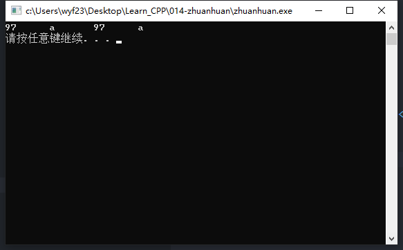

混合运算的类型转换
1. 混合运算和隐式转换
- 2 + 5 = 7
- 整型2+浮点型5，行吗？
- C++中允许相关的数据类型进行混合运算
- 相关数据类型
尽管在程序中的数据类型不同，但逻辑上进行这种运算是合理的 - 相关类型在混合运算时会自动进行类型转换，再计算
- 称为隐式转换
2. 算术转换
- 转换原则：
- 确保计算值的精度。转换后尽可能不丢失有效数字。
- short，2字节，能表示的数小
- int，4字节，能表示的数大
- int转short，要丢掉2字节的信息，不可取
- short转int，增加存储空间，但不丢失信息，可以
- 转换方式
- char，unsigned char，short，unsigned short，bool → int
cout << (‘a’+5) << endl;//‘a’转换为int再加5，结果为整型 - 精度低的向精度高的转换
- int → float → double
cout << (5+3.5) << endl;//5转换为double型再相加
- int → float → double
- 有符号向无符号转换
- int → unsigned int
- unsigned int ui=32678;
- cout << (5+ui) << endl;//5转换为unsigned int
- char，unsigned char，short，unsigned short，bool → int
3. 隐式转换时机
混合类型的表达式
1
2
3int n = 2;
char c = 'a';
cout << (c+n) << endl;//'a'的ASCII码为97，加2得整型99赋值
向左值类型转换
1
2
3double a = 8.12;
int k;
k = a;//a转换为int，舍去小数，k为8向低精度转换会损失有效数字
示例代码
1
2
3
4
5
6
7
8
9
10
11
12
13
using namespace std;
int main()
{
int a = 256 + 97;
double b = 256 + 97.625;
char c1, c2;
c1 = a;//错误
c2 = b;//错误
cout << (int)c1 << "\t" << c1 << "\t" << (int)c2 << "\t" << c2 << endl;
system("pause");
return 0;
}执行结果

- 在需要条件、逻辑表达式的地方
非0转true，0转false
4.显示转换
- 程序中明确标记转换的类型，就是显示转换，也就是强制类型转换
- 格式
<类型>(<表达式>)
(<类型>)<表达式> 举例
1
2
3
4double a=128,b=30;
int n=3;
a=(double)n/2; //强制将n转换为double
n=int(a/b); //强制将a/b的值转换为int优先级：高于乘法和除法，和逻辑非、按位取反同级
- 结合顺序：从左向右
5.总结
- 相同类型的数据运算，结果的类型不变
- 不同类型的数据运算，自动向精度高的类型转换
- 赋值运算，向左值类型转换
- 强制类型转换
<类型>(<表达式>)
(<类型>)<表达式> - 精度高向精度低的类型转换，会损失精度
- 整型相除，结果为整型，小数会被舍去
- 整型/整型=整型，3/2=1，而不是1.5
- double赋值给int，会舍去小数
- char和int相加，是字符的ASCII和整数相加